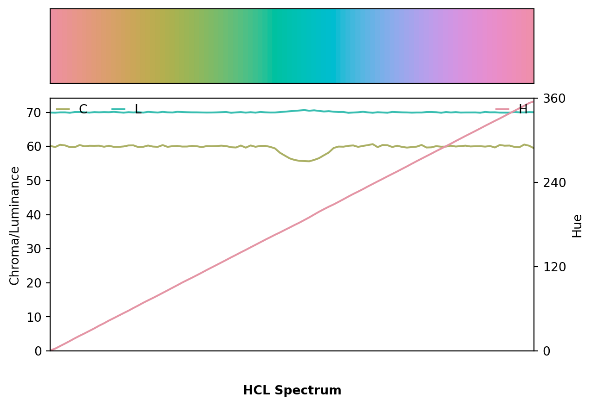

from colorspace import qualitative_hcl, hclplot
hclplot(qualitative_hcl("Dynamic"));Palette Visualization and Assessment
Overview
The colorspace package provides several visualization functions for depicting one or more color palettes and their underlying properties. Color palettes can be visualized by:
- swatchplot: Color swatches.
- specplot: Spectrum of HCL and/or RGB trajectories.
- demoplot: Illustrations of typical (and simplified) statistical graphics.
Color swatches
The function swatchplot is a convenience function for displaying collections of palettes that can be specified in different ways, e.g., an object of class palette, a colorobject, or hclpalette with a single palette or a list or dictionary to display and group multiple palettes at once.
from colorspace import swatchplot, sequential_hcl, palette
# Creating three palettes varying in only one dimension each
hue = sequential_hcl(h = [0, 360], c = 60, l = 65)
chroma = sequential_hcl(h = 0, c = [100, 0], l = 65,
rev = True, power = 1)
luminance = sequential_hcl(h = 260, c = 25, l = [25, 90],
rev = True, power = 1)
swatchplot([palette(hue(5), "Hue"),
palette(chroma(5), "Chroma"),
palette(luminance(5), "Luminance")],
figsize = (5, 1.5));
This shows the following:
- Hue: Only the hue (= type of color) changes from
H = 0(red) via60(yellow), etc. to300(purple) while chroma and luminance are fixed to moderate values ofC = 60andL = 65, respectively. - Chroma: Only the chroma (= colorfulness) changes from
C = 0(gray) to100(colorful) while hue and luminance are fixed toH = 0(red) andL = 65, respectively. - Luminance: Only the luminance (= brightness) changes from
L = 90(light) to25(dark) while hue and chroma are fixed toH = 260(blue) andC = 25(low, close to gray), respectively.
Next, we demonstrate a more complex example of a swatchplot call where the object provided is a dictionary of lists where each list contains a series of 4 palettes.hclpalette object consisting of blues, purples, reds, and greens. The keys of the dictionary are used for ‘group titles’, the name of the palettes is suppressed in this case (argument show_names = False).
For all palettes, luminance increases monotonically to yield a proper sequential palette. However, the hue and chroma handling is somewhat different to emphasize different parts of the palette.
- Single-hue: In each palette the hue is fixed and chroma decreases monotonically (along with increasing luminance). This is typically sufficient to clearly bring out the extreme colors (dark/colorful vs. light gray).
- Single-hue (advanced): The hue is fixed (as above) but the chroma trajectory is triangular. Compared to the basic single-hue palette above, this better distinguishes the colors in the middle and not only the extremes.
- Multi-hue (advanced): As in the advanced single-hue palette, the chroma trajectory is triangular but additionally the hue varies slightly. This can further enhance the distinction of colors in the middle of the palette.
from colorspace import swatchplot, sequential_hcl
swatchplot({"Single-hue": [sequential_hcl(x) for x in ["Blues 2", "Purples 2", "Reds 2", "Greens 2"]],
"Single-hue (advanced)": [sequential_hcl(x) for x in ["Blues 3", "Purples 3", "Reds 3", "Greens 3"]],
"Multi-hue (advanced)": [sequential_hcl(x) for x in ["Blues", "Purples", "Reds", "Greens"]]},
n = 7, show_names = False, nrow = 5, figsize = (10, 2.5));Moreover, the cvd argument can be set to a vector of transformation names, indicating which deficiencies to emulate. In the example below this is used to compare the Viridis and YlGnBu palettes under deuteranopia and desaturation.
from colorspace import sequential_hcl, palette, swatchplot
pal1 = sequential_hcl("YlGnBu")(7)
pal2 = sequential_hcl("Viridis")(7)
swatchplot([palette(pal1, "YlGnBu"), palette(pal2, "Viridis")],
cvd = ["protan", "desaturate"], nrow = 4, figsize = (10, 2.5));HCL (and RGB) spectrum
As the properties of a palette in terms of the perceptual dimensions hue, chroma, and luminance are not always clear from looking just at color swatches or (statistical) graphics based on these palettes, the specplot function provides an explicit display for the coordinates of the HCL trajectory associated with a palette. This can bring out clearly various aspects, e.g., whether hue is constant, whether chroma is monotonic or triangular, and whether luminance is approximately constant (as in many qualitative palettes), monotonic (as in sequential palettes), or diverging.
The function first transforms a given color palette to its HCL (polarLUV) coordinates. As the hues for low-chroma colors are not (or only poorly) identified, they are smoothed by default. Also, to avoid jumps from 0 to 360 or vice versa, the hue coordinates are shifted suitably.
By default, the resulting trajectories in the HCL spectrum are visualized by a simple line plot:
- Hue is drawn in red and coordinates are indicated on the axis on the right with range
[-360, 360]. - Chroma is drawn in green with coordinates on the left axis. The range
[0, 100]is used unless the palette necessitates higher chroma values. - Luminance is drawn in blue with coordinates on the left axis in the range
[0, 100].
Additionally, a color swatch for the palette is included. Optionally, a second spectrum for the corresponding trajectories of RGB coordinates can be included. However, this is usually just of interest for palettes created in RGB space (or simple transformations of RGB).
The illustrations below show how basic qualitative, sequential, and diverging palettes are constructed in HCL space (the corresponding mathematical equations are provided in the :ref:article-hcl_palettes-section-construction-details). In the qualitative "Set 2" palette below, the hue traverses the entire color “wheel” (from 0 to 360 degrees) while keeping chroma and luminance (almost) constant (C = 60 and L = 70).
from colorspace import specplot, qualitative_hcl
specplot(qualitative_hcl("Set 2").colors(100));
Note that due to the restrictions of the HCL color space, some of the green/blue colors have a slightly smaller maximum chroma resulting in a small dip in the chroma curve. This is fixed automatically (by default) and is hardly noticable in visualizations, though.
The sequential “Blues 2” palette below employs a single hue (H = 260) and a monotonically increasing luminance trajectory (from dark to light). Chroma simply decreases monotonically along with increasing luminance.
from colorspace import specplot, sequential_hcl
specplot(sequential_hcl("Blues 2").colors(100));Finally, the diverging “Blue-Red” palette is depicted below. It simply combines a blue and a red sequential single-hue palette (similar to the “Blues 2” palette discussed above). Hue is constant in each “arm” of the palette and the chroma/luminance trajectories are balanced between both arms. In the center the palette passes through a light gray (with zero chroma) as the neutral value.
from colorspace import specplot, diverging_hcl
specplot(diverging_hcl("Blue-Red").colors(100));To contrast these well-balanced HCL-based palettes with a poorly-balanced palette, the spectrum of the (in)famous RGB rainbow palette is depicted in both RGB and HCL space.
from colorspace import specplot, rainbow
specplot(rainbow().colors(100));Trajectories in HCL space
While the specplot function above works well for bringing out the HCL coordinates associated with a given palette, it does not show how the palette fits into the HCL space. For example, it is not so clear whether high chroma values are close to the maximum possible for a given hue. Thus, it cannot be easily judged how the parameters of the hue, chroma, and luminance trajectories can be modified to obtain another palette.
Therefore, the hclplot is another visualization of the HCL coordinates associated with a palette. It does so by collapsing over one of the coordinates (either the hue H or the luminance L) and displaying a heatmap of colors combining the remaining two dimensions. The coordinates for the given color palette are highlighted to bring out its trajectory. In case the hue is really fixed (as in single-hue sequential palettes) or the luminance is really fixed (as in the qualitative palettes), collapsing is straightforward. However, when the coordinate that is collapsed over is not actually constant in the palette, a simple bivariate linear model is used to capture how the collapsed coordinate varies along with the two displayed coordinates.
The function hclplot has been designed to work well with the hcl_palettes() in this package. While it is possible to apply it to other color palettes as well, the results might look weird or confusing if these palettes are constructed very differently (e.g., like the highly saturated palettes). To infer the default type of projection, hclplot assesses the luminance trajectory and sets the default correspondingly:
_type = "qualitative"if luminance is approximately constant._type = "sequential"if luminance is monotonic._type = "diverging"if luminance is diverging with two monotonic “arms” in the trajectory.
Thus, for qualitative palettes - where luminance and chroma are fixed - the varying hue is displayed in a projection onto the hue-chroma plane at a given fixed luminance:
The display below compares three single-hue sequential palettes (similar to “Blues 2” and “Blues 3”) by projection to the luminance-chroma plane for the given fixed hue. In the left panel the hue 260 is used with a simple linear chroma trajectory. The other two panels employ a triangular chroma trajectory for hue 245, either with a piecewise-linear (center) or power-transformed (right) trajectory.
from matplotlib import pyplot as plt
from colorspace import sequential_hcl, hclplot
fig, ax = plt.subplots(1, 3, figsize = (10, 3.5))
hclplot(sequential_hcl(h = 260, c = 80, l = [35, 95], power = 1), ax = ax[0])
hclplot(sequential_hcl(h = 245, c = [40, 0, 75], l = [30, 95], power = 1), ax = ax[1])
hclplot(sequential_hcl(h = 245, c = [40, 0, 75], l = [30, 95], power = [0.8, 1.4]), ax = ax[2])
plt.show()Note that for H = 260 it is possible to go to dark colors (=low luminance) with high chroma while this is not possible to the same extent for H = 245. Hence, chroma has to be decreased when proceeding to the dark low-luminance colors.
Finally, the display below compares two multi-hue sequential palettes along with a diverging palette.
from matplotlib import pyplot as plt
from colorspace import sequential_hcl, diverging_hcl, hclplot
fig, ax = plt.subplots(1, 3, figsize = (10, 3.5))
hclplot(sequential_hcl(h = [260, 220], c = [50, 0, 75], l = [30, 95], power = 1), ax = ax[0])
hclplot(sequential_hcl(h = [260, 60], c = 60, l = [40, 95], power = 1), ax = ax[1])
hclplot(diverging_hcl( h = [260, 0], c = 80, l = [35, 95], power = 1), ax = ax[2])
plt.show()The multi-hue palette on the left employs a small hue range, resulting in a palette of “blues” just with slightly more distinction of the middle colors in the palette. In contrast, the multi-hue “blue-yellow” palette in the center panel uses a large hue range, resulting in more color contrasts throughout the palette. Finally, the balanced diverging palette in the right panel is constructed from two simple single-hue sequential palettes (for hues 260/blue and 0/red) that are completely balanced between the two “arms” of the palette.
Demonstration of statistical graphics
To demonstrate how different kinds of color palettes work in different kinds of statistical displays, demoplot() provides a simple convenience interface to some base graphics with (mostly artificial) data sets. As a first overview, all built-in demos are displayed with the same sequential heat colors palette: sequential_hcl("Heat")(7).
from matplotlib import pyplot as plt
from colorspace import demoplot, sequential_hcl
colors = sequential_hcl("Heat").colors(5)
fig, axes = plt.subplots(2, 4, figsize = (10, 6))
demo_types = ["Bar", "Heatmap", "Lines", "Matrix", "Pie", "Spine", "Map", None]
for i in range(0, len(demo_types)):
if demo_types[i] == None:
fig.delaxes(axes.flatten()[i])
else:
demoplot(colors, type_ = demo_types[i], title = demo_types[i], ax = axes.flatten()[i])
plt.show()All types of demos can, in principle, deal with arbitrarily many colors from any palette, but the graphics differ in various respects such as:
- Working best for fewer colors (e.g., bar, pie, lines, …) vs. many colors (e.g., heatmap, …).
- Intended for categorical data (e.g., bar, pie, …) vs. continuous numeric data (e.g., heatmap, …).
- Shading areas (e.g., map, bar, pie, …) vs. coloring points or lines.
Hence, in the following some further illustrations are organized by type of palette, using suitable demos for the particular palettes.
Qualitative palettes: Light pastel colors typically work better for shading areas (pie, left) while darker and more colorful palettes are usually preferred for lines (right).
from matplotlib import pyplot as plt
from colorspace import demoplot, qualitative_hcl
fig, [ax1, ax2] = plt.subplots(1, 2, figsize = (6.5, 3))
ax1 = demoplot(qualitative_hcl("Pastel 1"), type_ = "Pie", n = 4, ax = ax1)
ax2 = demoplot(qualitative_hcl("Dark 3"), type_ = "Lines", n = 4, ax = ax2)
plt.show()Sequential palettes: Heatmaps (left) often employ almost continuous gradients with strong luminance contrasts. In contrast, when only a few ordered categories are to be displayed (e.g., in a spine plot, right) more colorful sequential palettes like the viridis palette can be useful.
from matplotlib import pyplot as plt
from colorspace import demoplot, sequential_hcl
fig, [ax1, ax2] = plt.subplots(1, 2, figsize = (6.5, 3))
ax1 = demoplot(sequential_hcl("Purple-Blue", rev = True), type_ = "Heatmap", n = 99, ax = ax1)
ax2 = demoplot(sequential_hcl("Viridis"), type_ = "Spine", n = 4, ax = ax2)
plt.show()Diverging palettes: In some displays (such as the map, left), it is useful to employ an almost continuous gradient with strong luminance contrast to bring out the extremes. Here, this contrast is amplified by a larger power transformation emphasizing the extremes even further. In contrast, when fewer colors are needed more colorful palettes with lower luminance contrasts can be desired. This is exemplified by a mosaic (center) and bar plot (right).
from matplotlib import pyplot as plt
from colorspace import demoplot, sequential_hcl
fig, [ax1, ax2, ax3] = plt.subplots(1, 3, figsize = (10, 3))
ax1 = demoplot(diverging_hcl("Tropic", power = 2.5), type_ = "Map", n = 99, ax = ax1)
ax2 = demoplot(diverging_hcl("Green-Orange"), type_ = "Matrix", n = 5, ax = ax2)
ax3 = demoplot(diverging_hcl("Blue-Red 2"), type_ = "Bar", n = 5, ax = ax3)
plt.show()All displays above focus on palettes designed for light/white backgrounds. Therefore, to conclude, some palettes are highlighted that work well on dark/black backgrounds.
from matplotlib import pyplot as plt
from colorspace import demoplot, sequential_hcl, qualitative_hcl, diverging_hcl
fig, axes = plt.subplots(2, 3, figsize = (10, 6))
plt.style.use("dark_background")
axes[0, 0] = demoplot(sequential_hcl("Oslo", rev = True), "Heatmap", ax = axes[0, 0])
axes[0, 1] = demoplot(sequential_hcl("Turku", rev = True), "Heatmap", ax = axes[0, 1])
axes[0, 2] = demoplot(sequential_hcl("Inferno"), "Heatmap", ax = axes[0, 2])
axes[1, 0] = demoplot(qualitative_hcl("Set 2"), "Lines", ax = axes[1, 0])
axes[1, 1] = demoplot(diverging_hcl("Berlin"), "Lines", ax = axes[1, 1])
axes[1, 2] = demoplot(diverging_hcl("Cyan-Magenta", l2 = 20), "Lines", ax = axes[1, 2])
plt.show()
import matplotlib as mpl
mpl.rcParams.update(mpl.rcParamsDefault)